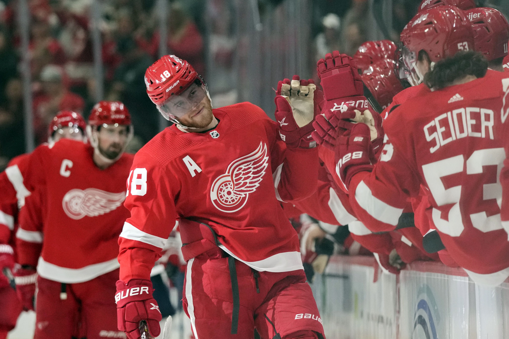
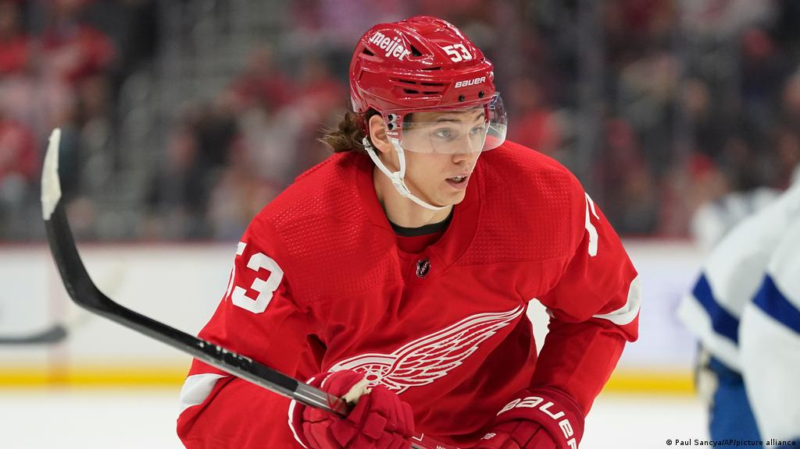

#71 Dylan Larkin - Forward
#59 Tyler Bertuzzi - Forward
#23 Lucas Raymond - Forward
#57 David Perron - Forward
#18 Andrew Copp - Forward
#15 Jakub Vrana - Forward
#85 Elmer Soderblom - Forward
#27 Michael Rasmussen - Forward
#70 Oskar Sundqvist - Forward
#81 Dominik Kubalik - Forward
#24 Pius Suter - Forward
#73 Adam Erne - Forward
#53 Moritz Seider - Defenseman
#8 Ben Chiarot - Defenseman
#17 Filip Hronek - Defenseman
#2 Olli Maata - Defenseman
#28 Gustav Lindstrom - Defenseman
#38 Robert Hagg - Defenseman
#39 Alex Nedeljkovic - Goaltender